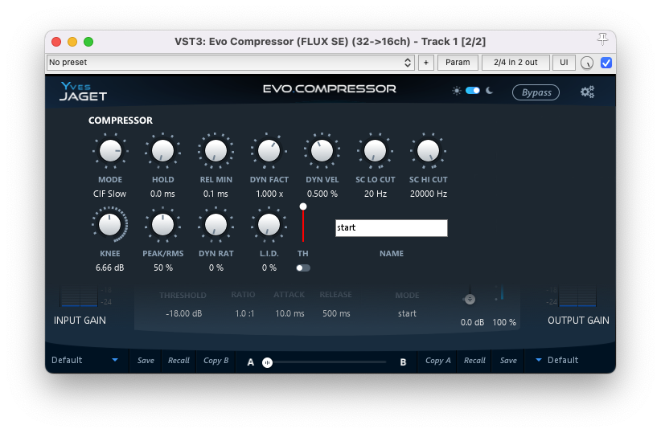

Geek Settings
These settings are available by clicking on the “Yves Jaget” icon.

Mode
Default Value: ClF Slow
8 different detection modes are available:
- Solera: The Attack setting also controls the integration time for RMS detection.
- Solera Feed Backward: The Attack setting also controls the integration time for RMS detection which is done on the output of the processor. Note also that the Solera Feed Backward prevents to use the external side chain because it’s the processed signal which feed the side chain.
- Classic Fast: The integration time for RMS detection is 10 ms with no direct relation with the Attack setting.
- Classic Medium: The integration time for RMS detection is 40 ms with no direct relation with the Attack setting.
- Classic Slow: The integration time for RMS detection is 80 ms with no direct relation with the Attack setting.
- Classic Feed Backward Fast: The integration time is 10 ms for RMS detection which is done on the output of the processor. Note also that the Feed Backward mode prevents to use the external side chain because it’s the processed signal which feed the side chain.
- Classic Feed Backward Medium: The integration time is 40 ms for RMS detection which is done on the output of the processor. Note also that the Feed Backward mode prevents to use the external side chain because it’s the processed signal which feed the side chain.
- Classic Feed Backward Slow: The integration time is 80 ms for RMS detection which is done on the output of the processor. Note also that the Feed Backward mode prevents to use the external side chain because it’s the processed signal which feed the side chain.
These Feed Backward modes have been inspired by vintage hardware architectures. they create a sort of auto regulation of the processing which produces a naturally beefy sound. The output volume also control the feedback level.
Hold
Unit: ms
Value Range: 0 ms / 500 ms.
Default Value: 0 ms
This parameter is the only one in the time related settings, that is independent per dynamic processor. The compressor and the expander may have different hold time.
Used in the Expander section, this setting allows very precise gating of drum tracks. It can also be used for creative purpose on the other dynamic sections.
Release Minimum
Unit: ms
Value Range: 0.67ms / 5000.00
Step: 0.01
Default Value: 1.30 ms
Sets the minimum release value when in Advanced Mode.
Dynamic Factor
Unit: x
Value Range: 0 / 3.0
Step: variable.
Default Value: 1
Amplify or dim the extracted real time dynamic informations.
Dynamic Velocity
Unit: %
Value Range: 10 / 1000
Step: 1
Default Value: 50 %
Sets the speed of variation on the dynamic informations.
SC Lo Cut
Unit: Hz
Value Range: 20 to 24000 Default Value: 20
Filters out the low-end from the detection circuit.
SC Hi Cut
Unit: Hz
Value Range: 20 to 24000 Default Value: 20000
Filters out the high-end from the detection circuit.
Knee
Unit: dB
Value Range: 0 to +24
Default Value: 0
Sets the smoothness of the transmission curve for the specific dynamic processing section. The curve is smoothed around the threshold value of the dB amount set with the knee value.
Peak Detection Amount
Unit: %
Value Range: 0 / 100
Step: 1
Default Value: 0 %
Instant peak value can be added to the RMS signal feeding the detector section, making the dynamic processing more sensitive to audio transients.
Dynamic Ratio
Unit: %
Value Range: 0 / 100
Step: 1
Default Value: 0 %
This setting relaxes the ratio applied to the processor section when the detected signal dynamic raises.
This setting literally opens the sound, increases the dynamic impression and keeps some crest by adjusting in real time the ratio of every dynamic processing section regarding both their current settings about ratio and the signal content (mainly dynamic range). To start understanding this setting and easily hear it, take a full mixed drum kit or a complete mix with punchy drums, set the compression threshold, ratio to get something near pumping or an aggressive compression.
Then increase the output gain to compensate the gain lost and then toggle between 0 and 100% of Dynamic Ratio. At 100 % you should hear more air in the sound, more transient and less compression impression; especially in terms of attack.
L.I.D.. (Level Independent Detector)
Unit: %
Value Range: 0 / 100
Step: 1
Default Value: 0 %
Allows process the audio signal independently of the sound level but regarding the signal dynamic range. It is mixed with the standard compression scheme.
Take a piece of full mixed music, set the ratio to 3-4 and the compression will start working. Now set the threshold of the compressor to the maximum value, the compressor will stop working because the sound level will never reach the threshold. Then increase the L.I.D.. and you will see (and hear) the compression working again!!! Now decrease or increase the input gain (in Solera or before, as you want) and you will see that the compression will continue to work equally; it’s totally, completely independent of the sound level and depends only on Ratio, Knee and sound content.
How can this be used? When you have too much dynamic in the sound, going for e.g. from -3, -6 dB Vu (or less) to +12 dB; If you want to compress the low levels you will hear the sound ™pumping∫ when the sound reaches the High levels and the only thing to do with standard compressor will be to increase the threshold to rescue some airiness in the sound. But when doing that the compressor will not work any more on the low levels, and you will hear some sound differences (in term density, live space, grain etcº ) especially when the compressor starts working. With Solera L.I.D.., adjust the threshold and ratio on the High levels to what you think OK, then increase the L.I.D.. (from 20 to 50 %) and listen now the low levels and especially the transition between Low and High levels. You can also start increasing the ratio to increase the effect. You’ll then notice that the compression will always be active but can still take care of High, loud levels (unless you set 100% L.I.D..) and make the compression very smooth and no more pumping. In addition with the Dynamic Ratio function, you’ll be able to set a constant and very natural envelop that allows to increase low levels, low frequency and to keep important transients.
L.I.D.. Threshold
Sets the gain range of the L.I.D. parameter.
- Up: Increasing of the L.I.D. action
- Down: Decreasing of the L.I.D. action
The current L.I.D. Threshold value is reflected by two blue lines on the Dynamic Activity display.
For Compressor and DCompressor sections, the L.I.D. action is effective only when the orange Dynamic Activity (18) exceeds the area between the two blue lines. For Expander and DExpander sections, the L.I.D. action is effective only when the orange Dynamic Activity (18) stays inside the area between the two blue lines.
L.I.D.. Maximum
When engaged, the threshold for the processing is determined by the maximum values from RMS/peak detection OR from the signal dynamic detection. The L.I.D. Threshold is still active, but the L.I.D. mix button is disabled.
This feature allows the whole process to be more reactive to the signal content. It worth to be tried on drum tracks.